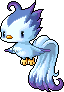

Lv. 80 · #8140001
하프
긴 꼬리를 가진 새처럼 생긴 몬스터이다. 아름다운 푸른 꼬리를 가지고 있다. 사랑스러운 외양에 예쁜 목소리까지 가지고 있지만 사람들을 현혹해서 명중률이 떨어지게 만드는 위험한 몬스터이다.
스탯
레벨 80- HP
- 27.0K
- MP
- 300
- EXP
- 850
- 넉백 가능 데미지
- 2800+
- 물리 데미지
- 350
- 마법 데미지
- 410
- 물리 방어력
- 650
- 마법 방어력
- 450
- 속도
- -10
- 80레벨 에서의 필요 명중
- 102.648
- 메소
- 600.0
- 속성관계
- 독속성약점
- 체경비
- 31.76
- 형태
- 조류형
출현 지역
출현 맵 3개맵 이름을 누르면 메이플노트의 맵 정보가 열립니다.
드롭 테이블
전체 26개| 아이템 | 아이템 ID | 드롭 확률 |
|---|---|---|
| 하프의 꼬리깃털 | 4000238 | 60% |
| 마나 엘릭서 | 2000006 | 7% |
| 하얀 포션 | 2000002 | 2% |
| 파워 엘릭서 | 2000005 | 0.3% |
| 오리할콘의 원석 | 4010005 | 0.3% |
| 사파이어의 원석 | 4020005 | 0.3% |
| 힘의 크리스탈 원석 | 4004000 | 0.1% |
| 마법의 돌 | 4006000 | 0.07% |
| 마법의 가루(검정) | 4007007 | 0.03% |
| 마법의 가루(보라) | 4007005 | 0.03% |
| 아대 제작의 촉진제 | 4130015 | 0.01% |
| 한손둔기 제작의 촉진제 | 4130004 | 0.01% |
| 미하일 | 1312010 | 0.01% |
| 다크 스타드 바지 | 1060095 | 0.01% |
| 다크 스타드 | 1040107 | 0.01% |
| 그린 웨어캡 | 1002288 | 0.01% |
| 레드 라피스샌들 | 1072158 | 0.01% |
| 황룡도 | 1442008 | 0.008% |
| 초록색 자일즈의 망토 | 1102031 | 0.008% |
| 골든 힌켈 | 1452011 | 0.007% |
| 사파이어 엠페러 | 1082114 | 0.007% |
| 귀 장식 민첩 주문서 10% | 2040318 | 0.006% |
| 망토 물리 방어력 주문서 10% | 2041005 | 0.004% |
| 석궁 공격력 주문서 10% | 2044602 | 0.004% |
| 뇌전 수리검 | 2070005 | 0.003% |
| 인피티니 | 1492010 | 0.0015% |
조건에 맞는 드롭 아이템이 없습니다.
확률은 메이플노트에 게시된 값입니다. 아이템 이름을 누르면 원본 아이템 정보가 열립니다. 과거 버전 데이터이므로 실제 메이플랜드와 다를 수 있습니다.